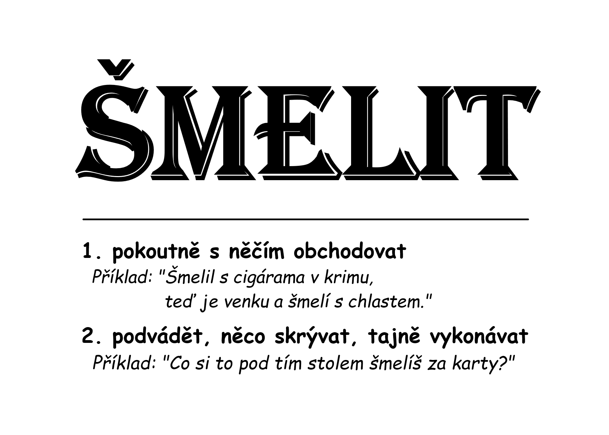
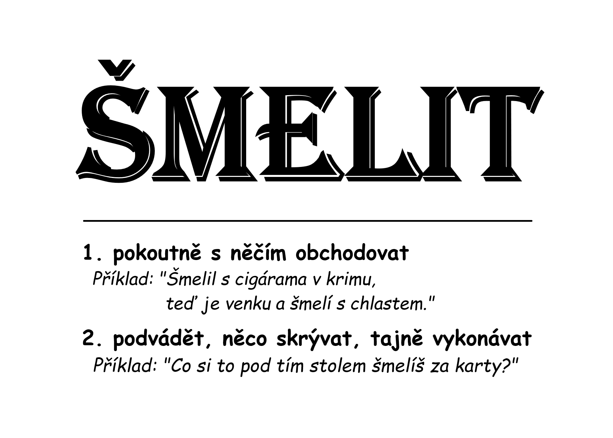
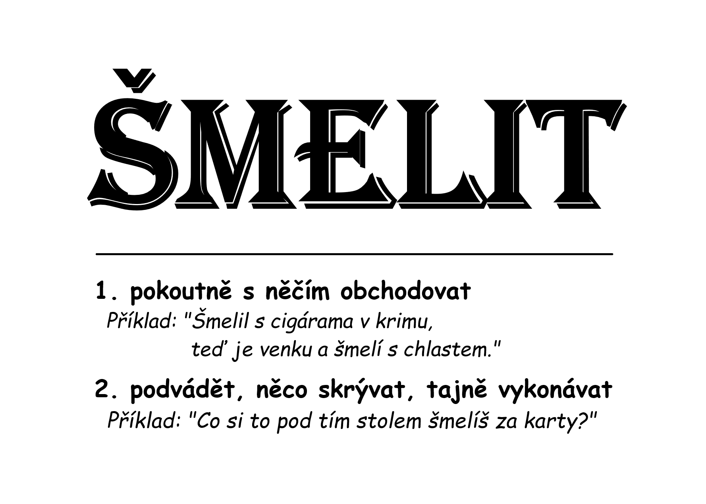

Šmelkarty


 



🃏✨ Jednoho večera jsem seděl u pokerového stolu s podezřelými lidmi.
Karty byly proti mně, soupeř si tahal z rukávu žetony. 🎲
Tu noc jsem prohrál. 😅
Ale naučil jsem se něco zásadního: 💡
V pokeru – i v životě – nejvíc vyhráváš, když ohýbáš pravidla. 🔄
Proč hrát fér, když můžeš hrát chytře? 🧠
Uvědomil jsem si, že úspěch není o štěstí 🍀 - že štěstíčku se musí jít naproti. 🚶♂️
Šmel vždy a všude 🕵️♂️ a sleduj, jak se ti otevírají dveře. 🚪
Život je hra. Play to win. ♠️💪
Šmelím, tedy jsem. 😎
